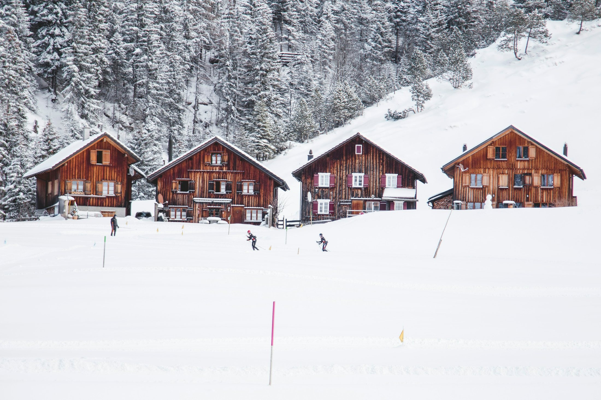
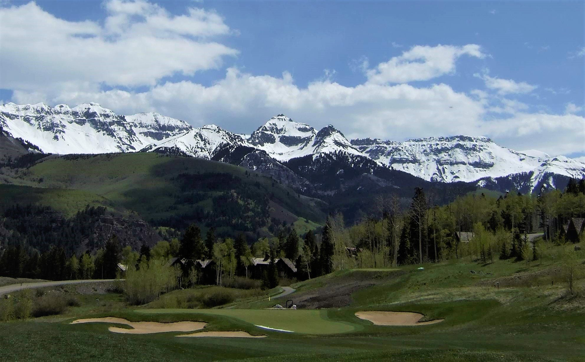
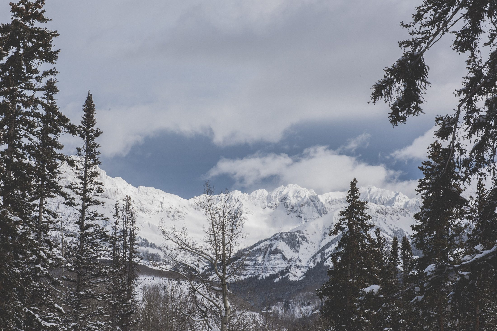
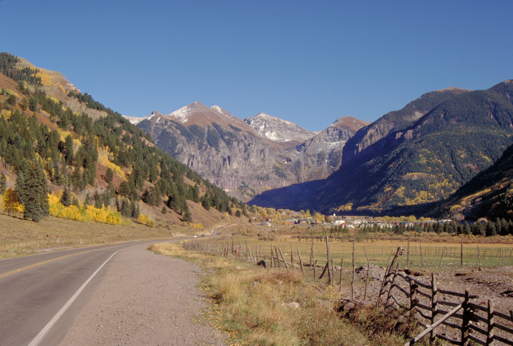

01


Mountain Village, Colorado
Condos, slope-side homes and homesites, and what to know before you buy in Mountain Village.
Mountain Village at a glance
Mountain Village sits at 9,545 feet, about 7 miles from Telluride along Highway 145 and 12 minutes away on the free gondola. The home-rule town covers 3.27 square miles and counted 1,264 people at the 2020 Census.
Joe Zoline began putting the land together in 1968, Gorrono Ranch and Adams Ranch among it, and the first lifts opened in 1972. Ron Allred and Jim Wells bought the resort in 1978 and planned a pedestrian village on about 3.5 square miles of former sheep ranches. San Miguel County approved the Mountain Village planned unit development on December 22, 1981; a metropolitan district followed in 1983, the master owners association in 1984, and the town incorporated on March 10, 1995.
Saved searches
Each card opens a live search of MLS listings, updated as they change.
01

02

03

04
<!-- IDX_ZONE: homes-for-sale-mountain-village-co-feed -->
The newest Mountain Village listings in one compact row, six to eight homes. Builder places the Showcase hotsheet shortcode here in its compact layout.
The gondola opened on November 19, 1996, built originally to improve air quality as the ski area and the village grew, and it is free. The Town owns and runs it, with four stations: Telluride, San Sophia, Mountain Village Center and Market Plaza. The ride to Telluride takes about 12 minutes, the hop from Mountain Village Center to Market Plaza about three, and the line tops out above 10,500 feet. Its operation is funded by a Real Estate Transfer Assessment of 3 percent on certain transactions, levied by TMVOA, the town's master owners association.
It closes for maintenance in the spring and fall, and SMART runs a free bus between the two towns while it is shut. A replacement is in planning, led by SMART with the two towns, the county, the owners association and Telluride Ski & Golf (the project page). For this season's schedule, see the Town's gondola and Chondola page.

The core was planned in 1978 as a pedestrian village, and the gondola and the lifts start inside it.

Telluride Ski & Golf runs the ski area on National Forest land, under a permit with the US Forest Service, and the town boundary itself touches National Forest System land. From the village core the Village Express climbs into the ski area; higher up, the resort's in-bounds hike-to terrain reaches the north face of Palmyra Peak, 13,320 feet by the resort's own figure (trail maps).
In summer the resort runs the 18-hole Telluride Golf Club. Play is limited to members of the Telluride Ski & Golf Club and their guests, and guests of the Peaks Hotel can play on a confirmed stay.

Day to day
School information is factual and by district. Always confirm a specific address in the district's school finder.
Questions
Yes. It incorporated as a home-rule town on March 10, 1995; before that it was a planned unit development in unincorporated San Miguel County. The Town and TMVOA, the master owners association for every property owner, are separate bodies.
On the free gondola, about 12 minutes from Mountain Village Center. When it closes for maintenance in spring and fall, SMART runs a free bus between the towns. By road, the Town puts Telluride 7 miles away along Highway 145.
An assessment by TMVOA, the Mountain Village owners association, of 3 percent on certain transactions; it funds gondola operations. Ask early whether it applies to the property you are buying.
Telluride School District R-1, whose schools are in the Town of Telluride. Always confirm a specific address with the district.
Nearby




Resources
Contact
He has lived in Telluride since 1998 and sold real estate here since 2004. Tell him which buildings and streets you are weighing, and he will walk you through each one and the rules that come with it.